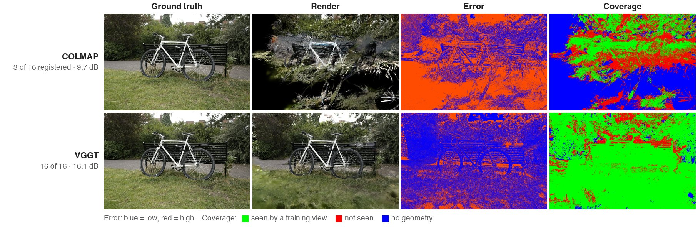
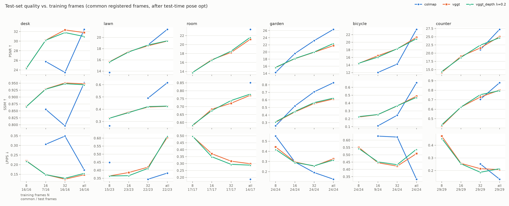
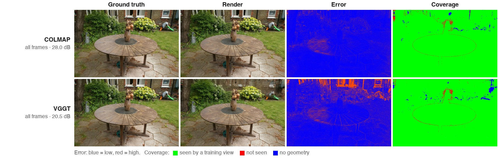
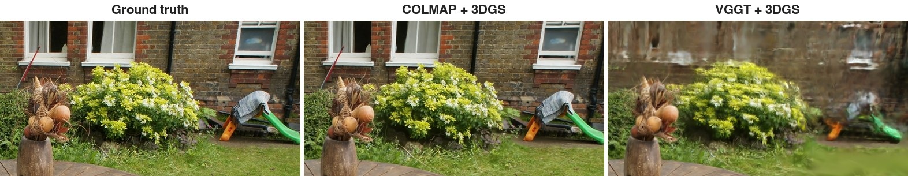
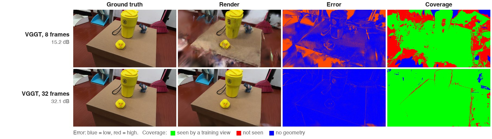
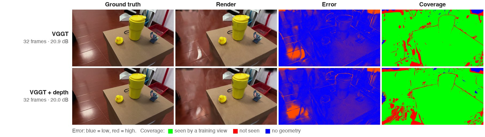

VGGT-Splat
Feed-forward VGGT poses vs. COLMAP for 3D Gaussian Splatting,
from 8 frames to all
Independent research project, 2026
VGGT predicts camera poses, a point cloud and per-frame depth for a set of images in a single forward pass, so it can replace COLMAP as the front end of 3D Gaussian Splatting. For a casual phone capture, two practical questions follow: how many frames does each pipeline need before it works, and with few frames, does supervising 3DGS with VGGT's depth recover the missing quality?
6 scenes: three self-captured phone videos (desk, lawn, room; 1080p, sampled at 3 fps, trained at 960×540) and three Mip-NeRF 360 scenes (garden, bicycle, counter). Each scene has a fixed test set (every 8th frame) and nested training sets of N = 8 / 16 / 32 / all frames. 3 methods share the same gsplat trainer with per-camera pose refinement, stopped at 7k steps:
Evaluation follows the protocol used for pose-free methods. Test cameras come from a joint run on training and test frames, are mapped into the trained model's frame by a Sim(3) fitted on the shared training cameras, and are refined for 500 steps with the Gaussians frozen. Methods are compared on the test frames they all registered. Re-running a configuration with different seeds moves PSNR by 0.06–0.35 dB (standard deviation), so differences below about 0.3 dB are treated as noise.
COLMAP needs enough overlap between views to match features and register cameras. With 8 frames it fails outright on desk, room, bicycle and counter, and registers 3/8 and 6/8 frames on lawn and garden. With 16 frames it still fails on lawn, room and counter. Even at 32 frames it registers only 10/32 frames on bicycle and 15/32 on desk, which is why its PSNR there is lower than at 16. VGGT returns a pose for every frame in every configuration.


With every frame available, COLMAP leads by 2.1–4.6 dB on five scenes and by 0.7 dB on desk. To check whether this comes from VGGT covering less of the scene, I split each test image into pixels seen by at least one training view and pixels seen by none. On the seen pixels alone VGGT is still behind: garden 21.7 vs. 26.3 dB, bicycle 20.7 vs. 22.8, counter 24.9 vs. 27.2. The renders are smeared rather than incomplete. On lawn, garden and bicycle, VGGT's PSNR rises from 32 frames to all frames while LPIPS gets worse, the signature of blur. This is consistent with feed-forward poses that are not mutually consistent enough for 3DGS to resolve fine detail; bundle adjustment is.


VGGT's advantage at this end is speed: it estimates poses for all frames in 47–73 s, while COLMAP takes 167–790 s on the same GPU.
| Pose estimation, all frames | desk | lawn | room | garden | bicycle | counter |
|---|---|---|---|---|---|---|
| Frames | 110 | 156 | 114 | 161 | 166 | 180 |
| COLMAP (s) | 167 | 790 | 505 | 770 | 380 | 480 |
| VGGT (s) | 47 | 60 | 49 | 68 | 68 | 73 |
With 8 frames, large parts of each test view were never seen by any training view. Those pixels are 0.5–9 dB worse than the seen ones, and the fraction of unseen pixels in a test frame is strongly anti-correlated with that frame's PSNR. Poses are not the problem here: VGGT's poses are good enough that seen regions render well.

The depth loss does what it is designed to do: on training views, the local correlation between rendered depth and VGGT depth rises from 0.4–0.8 to 0.7–0.9. But novel-view PSNR barely moves. After repeating the relevant configurations with three seeds, only two differences exceed noise: desk at 32 frames gets 0.68 dB worse and lawn at 8 frames gets 0.17 dB better. Finding 3 explains why. The prior constrains surfaces the training views already see, while the error is concentrated in regions they do not.

All frames, COLMAP on the left and VGGT on the right. For the 360° scenes (garden above, bicycle, counter) both models are rendered along one elliptical orbit around the scene center: the orbit is built from COLMAP's training cameras and mapped into the VGGT model by a Sim(3) fitted on the shared training cameras (median center error under 1% of the trajectory scale), so both sides always show the same novel view. The self-captured scenes were not filmed all the way around, so they are shown along the training camera path instead. Desk shows both methods; lawn and room show VGGT only, because COLMAP registered fewer frames there (149/156 and 75/114) and its camera path differs.
Test PSNR (dB) after test-time pose refinement, averaged over the test frames every usable method registered. Brackets give COLMAP's registered / total test frames when it did not register all of them; the other methods are averaged over the same subset. fail = pose estimation or alignment failed, or COLMAP's two reconstructions disagree. Best per column in bold.
| Scene | Method | N = 8 | N = 16 | N = 32 | All |
|---|---|---|---|---|---|
| desk | COLMAP | fail | 25.75 (7/16) | 23.47 | 32.46 |
| VGGT | 24.36 | 30.20 | 32.34 | 31.79 | |
| VGGT + depth | 24.36 | 30.20 | 31.79 | 30.97 | |
| lawn | COLMAP | 13.75 (15/23) | fail | 18.67 (22/23) | 21.44 (22/23) |
| VGGT | 15.66 | 17.47 | 18.51 | 19.35 | |
| VGGT + depth | 15.61 | 17.41 | 18.64 | 19.39 | |
| room | COLMAP | fail | fail | fail | 23.40 (14/17) |
| VGGT | 13.77 | 16.62 | 18.24 | 21.20 | |
| VGGT + depth | 13.77 | 16.52 | 18.54 | 21.64 | |
| garden | COLMAP | 14.27 | 19.57 | 23.19 | 26.34 |
| VGGT | 15.64 | 18.13 | 19.93 | 21.79 | |
| VGGT + depth | 15.70 | 18.17 | 19.99 | 22.39 | |
| bicycle | COLMAP | fail | 12.03 (9/24) | 14.25 | 23.40 |
| VGGT | 14.42 | 16.45 | 18.26 | 21.30 | |
| VGGT + depth | 14.46 | 16.08 | 18.28 | 20.93 | |
| counter | COLMAP | fail | fail | 21.04 | 27.25 |
| VGGT | 14.12 | 19.02 | 21.58 | 25.04 | |
| VGGT + depth | 14.40 | 18.72 | 22.44 | 24.71 |
For a casual capture of a few dozen frames, VGGT is the safer front end for 3D Gaussian Splatting: it always produces usable poses, and COLMAP often does not. Once a capture has a hundred frames or more, COLMAP's bundle adjustment gives noticeably sharper results, at 3.5–13× the pose-estimation time. A VGGT depth prior is not a substitute for more views: with few frames, what is missing is coverage, and only more views or priors on unseen regions can supply it.
One capture per scene and, for the main grid, one seed; seed repeats cover a subset of configurations. Training stops at 7k steps for every run (on desk at 16 frames, the 30k checkpoint was slightly worse on test views, with the same ranking). The seen / unseen split uses each model's own geometry, so it is an approximation. Test cameras come from a separate joint run and are refined with the scene frozen, the standard protocol for pose-free methods but not the same as evaluating with ground-truth test poses.
Code, the evaluation protocol, and the scripts that produce every table and figure on this page are in the repository, with pinned versions of gsplat, VGGT and COLMAP and the commands to rerun the full grid. The trained all-frames models of every scene (.splat and compressed .ply) and the self-captured frames are attached to the release. The 3DGS trainer is a modified copy of gsplat's example trainer; every change is listed in trainer/NOTICE.md.
@misc{chu2026vggtsplat,
title = {VGGT-Splat: Feed-forward VGGT Poses vs. COLMAP for
3D Gaussian Splatting, from 8 Frames to All},
author = {Chu, Jiaming},
year = {2026},
howpublished = {\url{https://github.com/chu-jiaming/VGGT-Splat}}
}